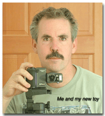

Alexander Dawson Henderson IV
Dawson Henderson was born on November 19, 1951, at Peninsula Community Hospital in Carmel, California. He was the first child of Alexander D. Henderson III and Patricia Ford.
| November 19, 1951 | Born in Carmel, California, at Peninsula Community Hospital. | |
| July 5, 1957 | The family moved from California to Florida. Dawson later attended Hillsboro Country Day School. | |
| 1968 | Dawson was living in Carmel, California, and entered Menlo College. He participated in varsity wrestling and varsity tennis. | |
| June 30, 1984 | Dawson married Sharon E. Galbreath in Flagstaff, Arizona. | |
| Career | Dawson worked as a designer in desktop publishing and interactive software. He also developed websites, including work for the Coconino National Forest and the Arizona Trail Association. |

Last Updated: July 12, 2026